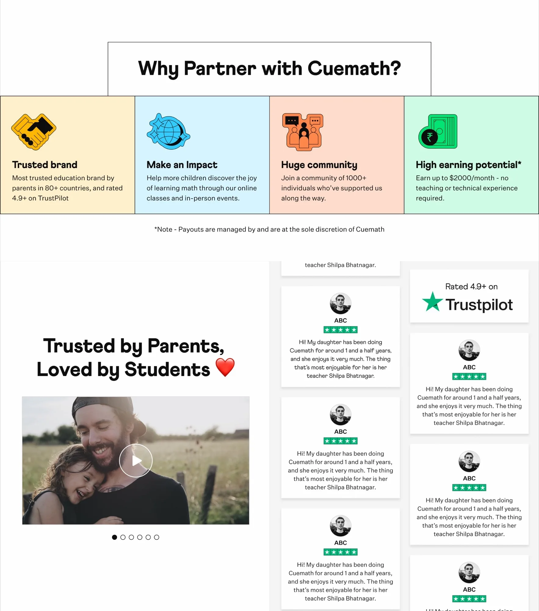
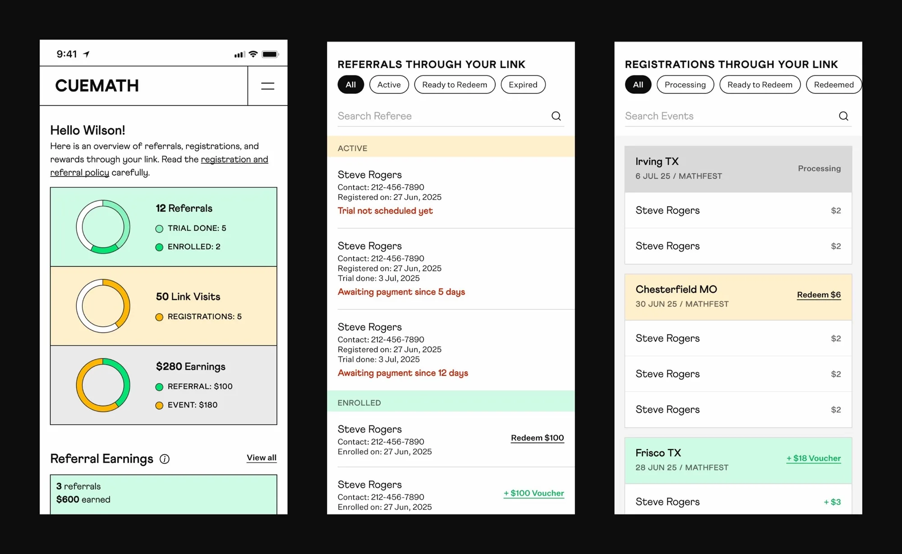
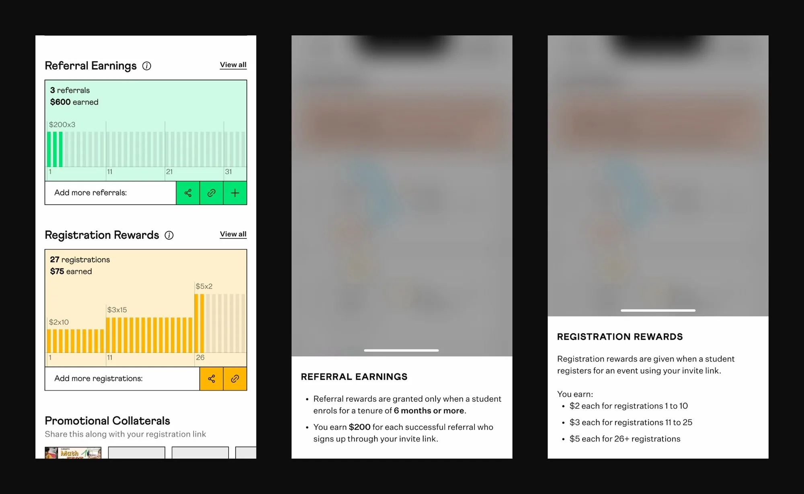

The problem
Partners drove sign-ups through their referral links — but tracked progress in their head. After every payout, they compared their own count against what landed in their account. When the two didn't match — and they often didn't — they had no way to find out why on their own. The only fix: a ticket to ops, and a wait that could span days.
This worked when the partner community was small. But as Cuemath expanded its events across the USA to bring in new students, a problem that frustrated a handful would become a bigger one as the network grew.
Role
I owned the design of Cuemath Partners end-to-end — from the surfaces partners used to the admin tool behind them.
- End-to-end UX/UI — sign-up landing page (web), partner dashboard (mobile), and admin dashboard (web)
- Trust through transparency — we couldn't pay partners more to earn their trust, so I designed for visibility instead
- Cross-functional collaboration — PM (scope), engineers (build), business ops (payout structure)
How it works
A partner signs up through a landing page using their name, email, and phone number. Once in, their dashboard shows referrals, direct sign-ups, event-by-event performance, and earnings in one place. A separate admin tool — used only by Cuemath's business ops team — sits behind the scenes to manage the partner network.
Open in Figma →Decisions
Three decisions shaped the partner experience: how trust got built before partners signed up, how partners saw their own work afterward, and how the system kept their two types of rewards clear.
01Trust as the spine: borrowed Cuemath's credibility, didn't build it from scratch
Cuemath already had two things partners would trust before signing up: a 4.8+ Trustpilot rating across 80+ countries, and a community of 1,000+ existing volunteers. The landing page used those (Trustpilot reviews on the page, community size stated, brand reach named) rather than new claims I'd have to prove. The programme didn't have to build trust from scratch; it inherited it from what Cuemath had already earned.
The bet worked: 138 partners signed up across the USA without a single paid ad or brand campaign.

Trustpilot reviews, awards and mentions embedded on the landing page — borrowed credibility, not claimed.
02Dashboard as the partner's visibility into their own work
The landing page brings partners in once; the dashboard is where they live afterward. I designed it around the question they used to ask ops manually: "Where are my referrals, and when do I get paid?" Referral progress (registered → trial → enrolled), redemption status (assigned → verified → processed → paid), and earnings totals — all visible at a glance. The dashboard replaced the ticket-and-wait cycle with answers partners could check on their own — and they came back for them, month after month.

The partner dashboard — referral progress, redemption status, and earnings totals all visible at a glance.
03Two-track reward system: events and direct referrals as separate flows
Partners did two different kinds of work, and the rewards reflected that. Event registrations paid $2–5 each (small, fast); direct referrals into the tutoring program paid $100–200 each (large, longer wait). The dashboard kept these separate — an Events tab and a Referrals tab, each with its own progress view and payout structure. Partners could see which kind of work was paying them, and how much, without mixing the two up.
The split also made the high-value work easy to spot — a partner's handful of big referrals no longer buried under hundreds of small event sign-ups.

Events and Referrals shown as separate tracks, each with its own progress view and payout structure.
Impact
Nine months after launch, the program was still in active use — not a launch spike that faded out.
Partners onboarded
138
Partners onboarded across the USA, without paid ads (Aug 2025 – Apr 2026, via Mixpanel).
Active users
3,019
On the Partner Dashboard across the 9 months — partners, prospective partners, and visitors.
Peak monthly users
686
January 2026 — the high point of the nine-month window.
Top partner
25
Direct referrals from the single most active partner.
Activity tracked the US school calendar: referral sharing peaked in October, riding September's admissions season; traffic peaked again in January, as parents returned from the winter break — December the quiet stretch between.
One honest gap: the downstream conversion (referral → registration → paid enrollment) sat in a separate business funnel I didn't own. Closing that loop is the v2 I'd build.
Lessons
Parents disguised as partners
I designed Cuemath Partners for community educators — tutors, consultants, homeschool leaders with networks to promote to. After launch, the data showed someone I hadn't planned for: Cuemath parents, signing up as partners to refer themselves and known leads, earning back value on the enrollment they were already making. The system worked exactly as built — the users were just wider than who I'd designed for. The user you didn't plan for can be hiding inside the audience you did.
Design for where the user actually is
I built the partner dashboard desktop-first. But partners aren't at desks — they're out in the field between events, checking their phones. We rebuilt it mobile-first, and the rework cost weeks. The miss wasn't effort; it was picturing the wrong moment of use. Where someone opens a product shapes its design as much as what they do inside it.
You can't always buy trust — you design it
We couldn't out-pay other programs for partners' loyalty — so instead of buying trust, I built it into the product — partners could check their referrals and earnings without asking anyone. When you can't out-spend for trust, out-design for it.